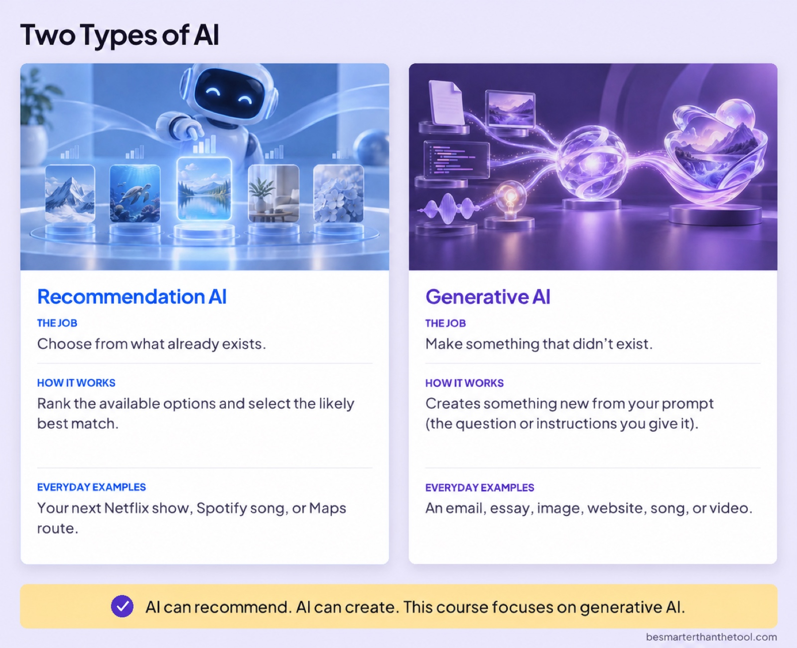

Working cut · v13 · 2:32 · For review
The original opening, AI Is Everywhere from Why Learn AI?, and the updated Two Types of AI board. This version ends after “This course focuses on generative AI.” The lesson’s new closing is intentionally omitted.
Review the flow and the change in narration voice at the two joins. The old patterns explanation, superhero comparison, and closing message are removed.

Built from existing finished videos with one additional encode. Visual transitions and audio continuity were checked computationally; the narration joins still need a listening review. This candidate is not installed in the course.
Build and verification notes · Working-cut transcript · Open video